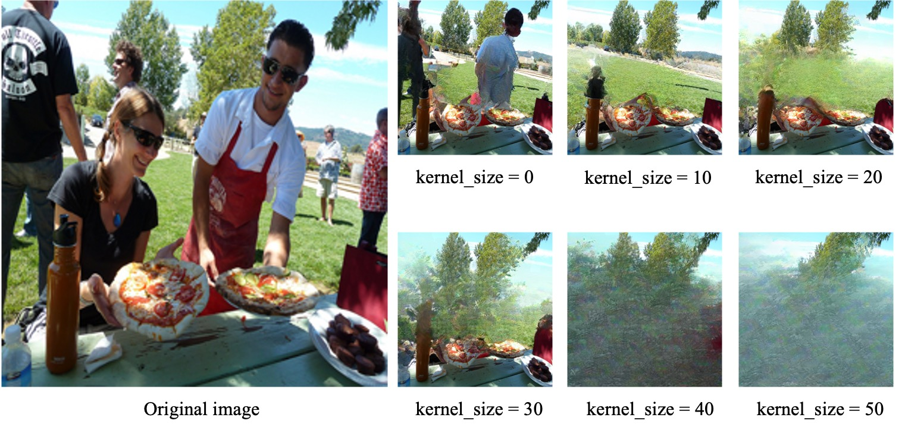
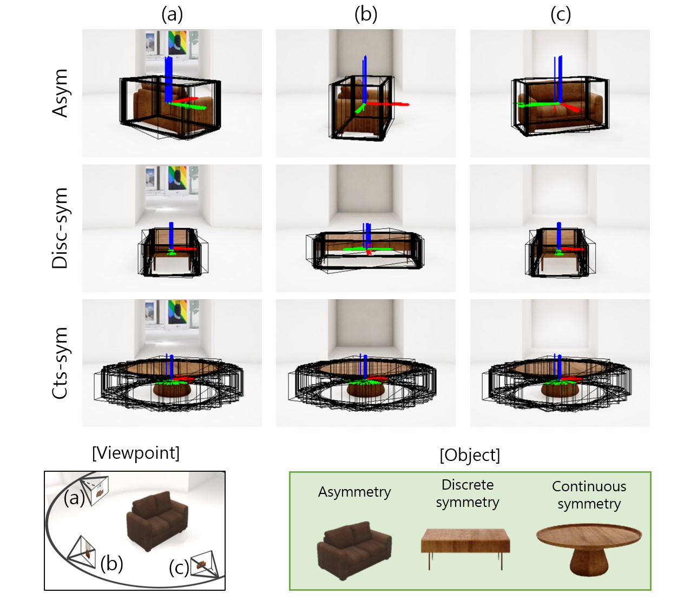

|
Taekbeom Lee I'm Ph.D. student at Seoul National University, Department of Aerospace Engineering, advised by Prof. H. Jin Kim. Before that, I received Bachelor's degrees in Mechanical and Aerospace Engineering at SNU. I worked on object SLAM, 3d reconstruction based on neural implicit representation, active mapping system, and reliable visual localization. |

|
ResearchI'm interested in 3d computer vision, NeRF / gaussian splatting, SLAM, visual-language foundation models, and 3d scene graph. |

|
Category-level Neural Field for Reconstruction of Partially Observed Objects in Indoor Environment
Taekbeom Lee, Youngseok Jang, H. Jin Kim Robotics and Automation Letters (RA-L), 2024 arXiv / github We introduce category-level neural fields that learn meaningful common 3D information among objects belonging to the same category present in the scene. |
|

|
Object Remover Performance Evaluation Methods Using Classwise Object Removal Images
Changsuk Oh, Dongseok Shim, Taekbeom Lee, H. Jin Kim Sensors, 2024 arXiv We propose new evaluation methods tailored to gauge the performance of an object remover. We confirm that the proposed methods can make judgments consistent with human evaluators in the COCO dataset, and that they can produce measurements aligning with those using object removal ground truth in the self-acquired dataset. |
|

|
Object-based SLAM utilizing unambiguous pose parameters considering general symmetry types
Taekbeom Lee*, Youngseok Jang*, H. Jin Kim (*equal contribution) ICRA, 2023 arXiv This work proposes a system for robustly optimizing the pose of cameras and objects even in the presence of symmetric objects. |
Academic Service |
- Conference reviewer for ICRA'25